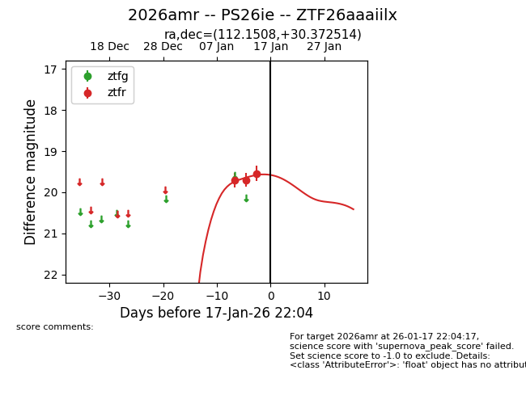
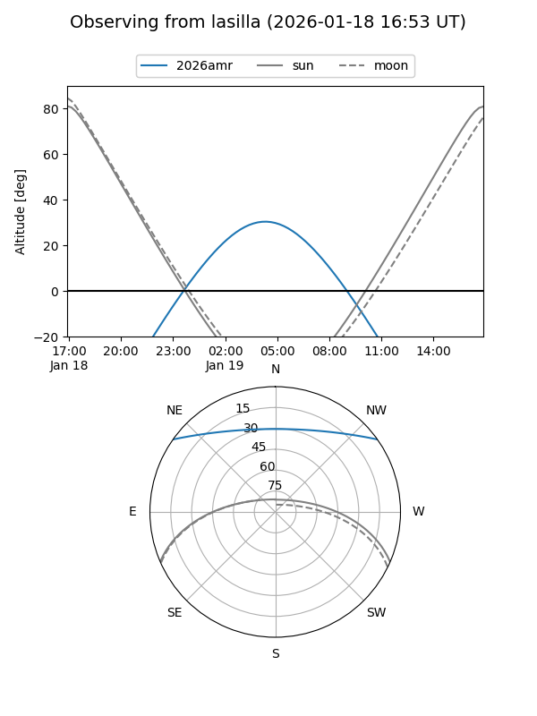
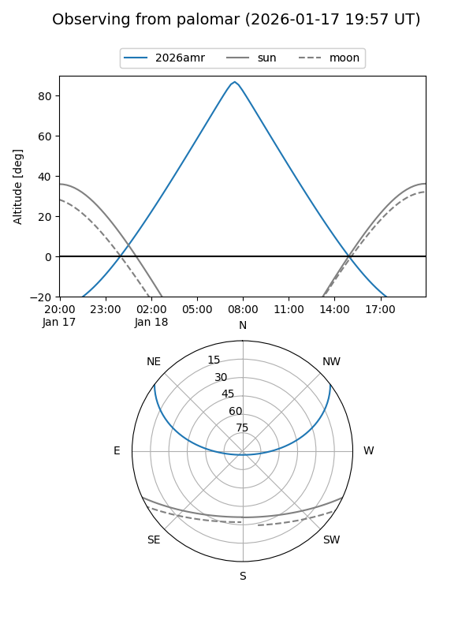
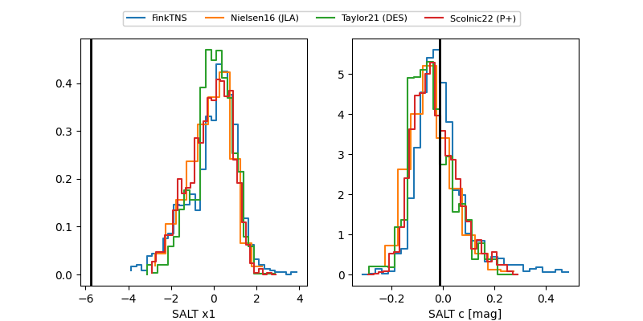

2026amr
Target 2026amr at 2026-01-17 22:05
Aliases and brokers:
FINK: link
Lasair: link
ALeRCE: link
TNS: link
YSE: link
alt names
ZTF26aaaiilx (ztf,fink_ztf)
2026amr (tns,yse)
PS26ie (panstarrs)
Coordinates:
equatorial (ra, dec) = 112.1508,+30.37251
equatorial (HMS+DMS) = 07:28:36.19,+30:22:21.05
galactic (l, b) = (188.5180,+20.76440)
Flags:
Photometry:
last ztfr=19.54
3 ztfr detections
Lightcurve

Visibility


Additional plots
